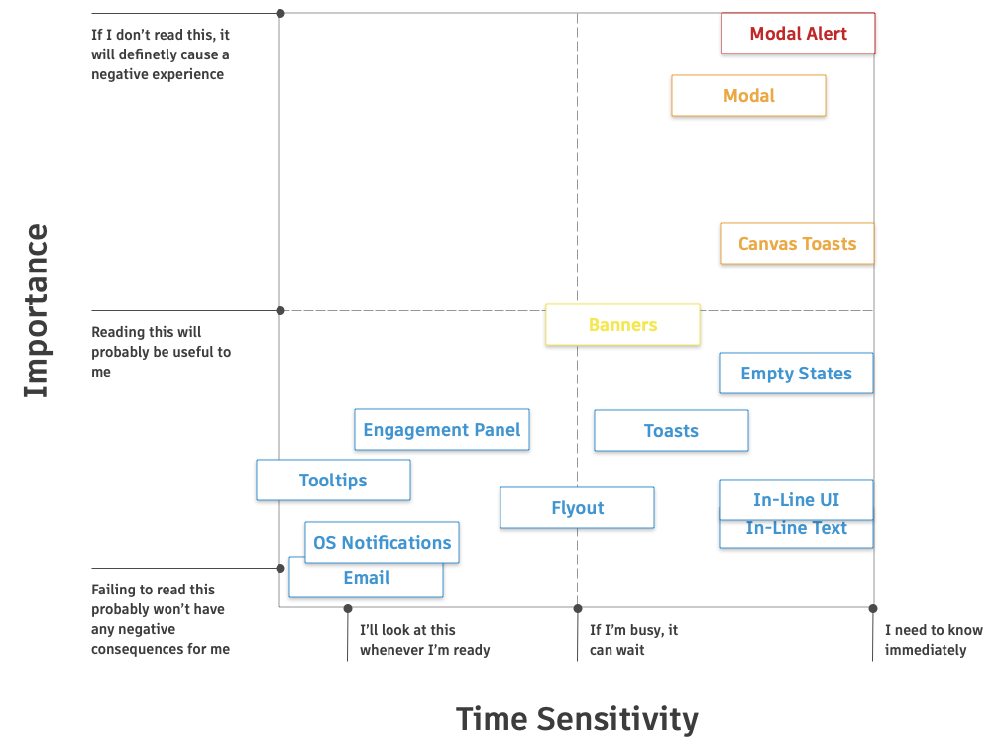
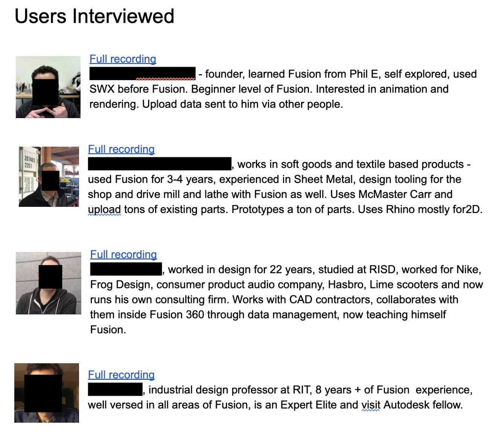

Reclaiming Focus: Crafting A Unified Messaging Experience
How I redesigned a complex notification system to reduce user distraction and improve communication clarity, ultimately leading to a 15,000 increase in paid users in the first month.

The Problem
Notifications were a non-standardized mess causing confusion, reduced growth opportunities, and a bad taste with customers, risking brand quality and customer loyalty.
- User Experience: The inconsistent volume of notifications disrupted workflows, creating an overwhelming experience. Users struggled to prioritize information and efficiently manage in-app communication.
- Business Impact: Key communications, particularly those related to subscriber acquisition, were being lost in the noise, significantly reducing their impact on business goals.
- Product Perception: The lack of a cohesive notification experience detracted from the perceived quality and coherence of Autodesk Fusion, presenting an unpolished and fragmented appearance.
- Internal Friction: The absence of a unified notification strategy increased development complexity and led to redundant implementation efforts, making the notification system difficult to manage and evolve.

Project Overview
- Client/Company: Autodesk Fusion
- My Role: Lead UX Designer. I was responsible for the project's launch, UX vision, and strategy, as well as overseeing user research and collaborating closely with a project manager (who joined later) and two developers. I also proactively gathered feedback from UX designers across other Autodesk teams to ensure broader alignment.
- Duration/Timeline: 8 months
- Tools & Technologies: Figma, Mural, Airtable, Weave Design System
-
Project Goals:
- User Goal: Significantly reduce notification fatigue and distraction by creating a clear, consistent, and predictable system for receiving and managing messages.
- Business Goal: Increase the visibility and effectiveness of critical communications, especially growth messaging.
Process
Discovery & Research
Recognizing Fusion's fragmented messaging hurt user engagement, I initiated an investigation. A thorough content inventory of existing notifications, affinity mapping, and review of the Autodesk Design System (Weave) and other products helped identify inconsistencies. User research highlighted key frustrations: overuse/repetition, bad content, difficult access, lack of user control, and too many channels.

Framework Development & Design
I created a severity matrix and notification categories to guide delivery methods. After securing stakeholder buy-in, I moved from rapid sketches to high-fidelity designs using Weave components. This led to defining a centralized Notification Center, combining flyout and toast notifications, and exploring features like filtering, collapsible sections, and bulk actions, while addressing design challenges like filter scalability and visual clarity.
User Testing & Iteration
Usability sessions were conducted to evaluate the current system and validate the new Notification Center concept. Key hypotheses around centralization, intuitiveness of flyouts/toasts, and workflow disruption were tested. Findings informed iterative improvements, prioritizing critical feedback for the initial version and deferring some enhancements.
A Centralized Solution
My work successfully transformed Fusion's notifications from a source of user frustration into a strategic communication tool. I designed a centralized notification center that reduced user distraction. Coupled with clear guidelines and prioritization strategies, this demonstrably reduced user distraction and improved the overall clarity of in-app messaging. The solution involved high-severity messages appearing as toasts, less critical ones stored in a flyout, and intermediate messages briefly appearing as toasts before moving to the flyout, minimizing workflow disruption.

Results & Impact
- Enhanced visibility and effectiveness of growth and marketing messages, directly contributing to a measurable increase of 15,000 paid subscribers in the first month.
- Establishment of a scalable and maintainable messaging framework, streamlining product development and ensuring consistency.
- Provision of clear design patterns and documentation, empowering internal teams to implement notifications effectively and autonomously.
- Influence on Autodesk's design system, with key elements of my work and features incorporated into a new component within Weave.
- Established as in-house notification expert and mentor.
Key Learnings
- The critical importance of a unified messaging strategy was underscored; fragmented systems invariably lead to user frustration and missed business opportunities.
- Iterative design, strongly backed by comprehensive user research and continuous stakeholder buy-in, is paramount when redesigning complex systems.
- Developing and providing clear guidelines alongside reusable design components significantly empowers other teams, fostering consistency and efficiency across the product ecosystem.
- A deep understanding of user pain points through direct research and analytics is fundamental to designing solutions that genuinely improve user experience and achieve business goals.